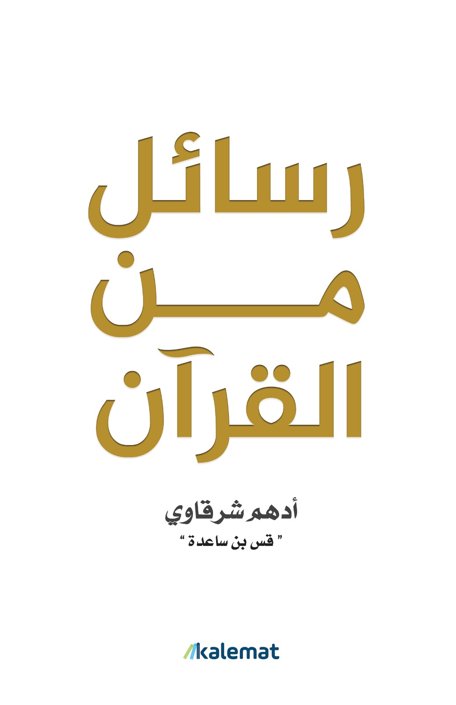

تأليف أدهم شرقاوي
كتاب "رسائل من القرآن" هو عمل للأديب والداعية الإسلامي محمد متولي الشعراوي، الذي يُعد من أبرز مفسري القرآن الكريم في العصر الحديث. في هذا الكتاب، يتناول الشعراوي بعض الرسائل التي يحملها القرآن الكريم للبشرية — رسائل تمس قضايا الإيمان، والأخلاق، والعبادة، والعلاقة بين الإنسان وربه، وبين الإنسان والناس من حوله. الكتاب أسلوبه بسيط وسلس، يحمل روحًا وعظية وتربوية، مع محاولة تقريب معاني الآيات إلى قلب القارئ بأسلوب تأملي بعيد عن التعقيد.
من أبرز ملامح الكتاب:
التركيز على القيم القرآنية الكبرى مثل الرحمة، والعدل، والصبر، والتقوى.
ربط النصوص القرآنية بالواقع المعاش.
أسلوبه الوجداني الذي يخاطب القلب قبل العقل.
الكتاب مناسب جدًا لمن يريد أن يقرأ القرآن بروح الباحث عن الهداية وليس فقط التفسير اللغوي أو الفقهي.